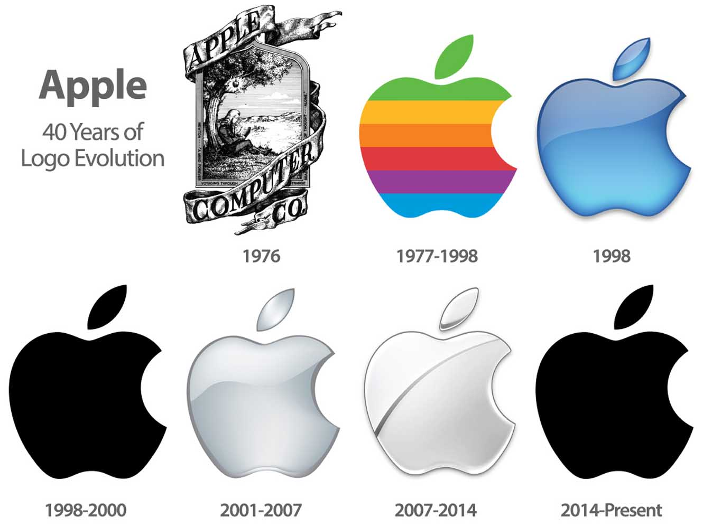

Apple: the story of the legendary logo.

In the beginning there was Newton and Apple
The author of the logo of the new company was Ronald Wayne, who left the company in the second week after opening and sold the available 10% of shares for $ 800. Having decided that the enterprise started by friends is waiting for failure Ronald lost billions. If we assume that the price of Apple will triple in the near future, Wayne's possible profit could reach 100 billion dollars. The logo designed by Ronald was not similar to the world-famous logo. The image offered by Wayne was a work of art in miniature. The painting depicted Isaac Newton sitting under a huge tree with an Apple falling from it. When you zoom in on the edge of the image, you could see the phrase " Newton… A Mind Forever Voyaging Through Strange Seas of Thought … Alone». If you translate the original text, you get the following expression: "Newton ... a Mind that sails alone through strange seas of thought." This phrase occurs in the work "Prelude", by William Wordsworth.

The appearance of the logo in the form of a « bitten Apple»
Although the emblem proposed by Ronald was original and carried a certain meaning for commercial purposes, such a sign is absolutely not suitable. The company used a picture of Wayne as a sign for almost a year. Then Steve jobs decided to use the services of a professional in this matter. The choice fell on Rob yanow.
Jobs put forward the following requirements for the future logo of the company:
-simplicity
-modernity
-good recognition
A week later, the designer presented the finished work to the customer: a colored Apple with a bite. To create an image, Yanov purchased apples from a nearby store, put them on a plate at home, and made sketches constantly trying to remove more and more unnecessary details. It was decided to make the Apple bitten in order to distinguish it from other similar fruit and berry crops.
Speculation and rumors
The color logo of Apple has caused various rumors that the company supports representatives of sexual minorities. But by supporting the LGBT community, the firm did not seek to openly advertise this with its logo. If gays have chosen the image of a rainbow as their sign, it has nothing to do with the multicolored Apple Apple. Rob's work was created much earlier than these events. Also, fans of searching for hidden meaning in everything began to claim that the colored Apple is a tribute to the Englishman Alan Turing, the famous mathematician and cryptographer. Alan tried to fight fascism using his knowledge and skills, breaking the codes of secret organizations. When the Second world war ended, Turing became involved in the development of artificial intelligence. But scientific works could not help Alan avoid criminal punishment for homosexuality. The scientist faced a difficult choice: two years in prison or hormone therapy. Also, Alan was deprived of the opportunity to engage in cryptography. As a result, Turing began to lead a reclusive lifestyle. At the age of 41 he committed suicide by biting off a poisoned Apple
Why Apple was the colored
The logo designer encourages you not to look for hidden meaning in the color scheme. Rob claims that the logo he designed reflected the scope of the company's activities. Apple produced a PC with a color monitor — that's why Apple is colored. Six colors is exactly how much the display could convey in those days. Comparing an Apple with a rainbow is unacceptable, because the rainbow uses seven colors, not six. Green is the only color that Yanov paid special attention to-the first place. All other colors were placed randomly by the designer.
From color to monochrome
The painted Apple has been attracting customers ' attention to Apple products for 22 years. The company itself has undergone a number of changes over such a long period of time. The problems started in the 1980s. First the failure of the Apple III project, then the plane crash in which Wozniak was injured. Unable to cope with the responsibilities of a leader alone, jobs hired John Scully. But there were more and more disagreements between the leaders. Steve was very worried about the company's problems. Although jobs and Wozniak received medals for technological progress in 1985, Steve decided to leave the company. Which he did in the same year of 1985. Jobs was able to return back only after 13 years. The company at that time was in a deplorable state. Financial problems were so serious that competitors repeatedly advised the company to declare bankruptcy.
Only a miracle could save the company. Such a miracle was the design of the new iMac G3 case. the Author of the work was Jonathan Ive. The design of the new building, designed by YWAM turned computers into lollipops. With its development, the industrial designer literally saved the company from ruin. A series of new monoblock PCs became the basis for the development of the home computer sector. The compact case has all the elements necessary for smooth operation inside. The computer was equipped with a web camera, wireless devices for receiving and transmitting data. For full operation, it was only necessary to connect the keyboard and mouse included in the basic configuration. A remote control was attached to the computer to control the playback of multimedia files. The new product was gaining huge popularity among users. Computers in an unusual design have become an integral attribute of the heroes of movies and TV series. Thus, the whole world has learned about the iMac G3, which combines a beautiful design and performance. Increased attention to the new product forced management to change the colorful logo, which looked out of place on an already colored computer. In 1998, it was decided to use monochrome instead of a colored Apple. This replacement only added to the originality of the company's logo. What does the monochrome Apple say? The evolution of the Apple logo shows us that the company has matured. She went through hard times, but she was able to move on. The company continues to develop and delight fans with new developments.